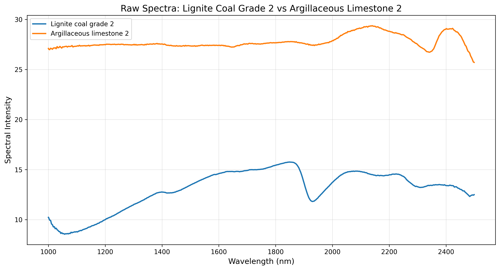
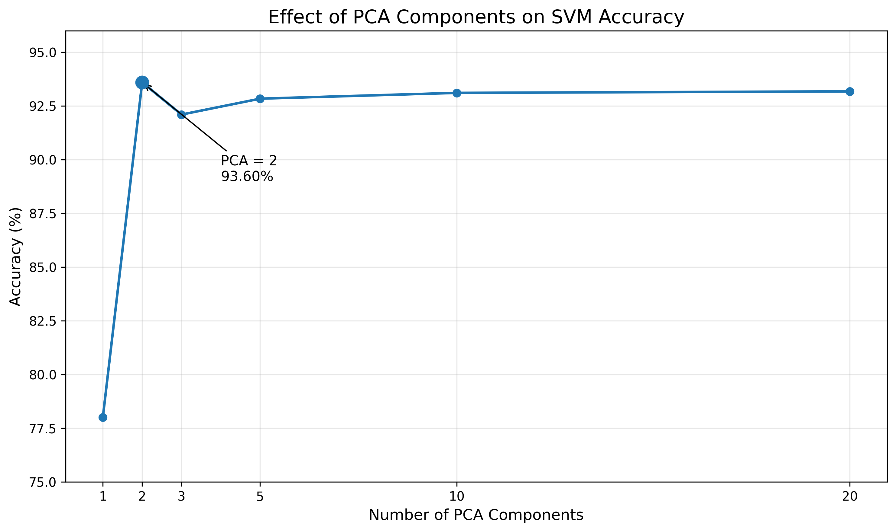
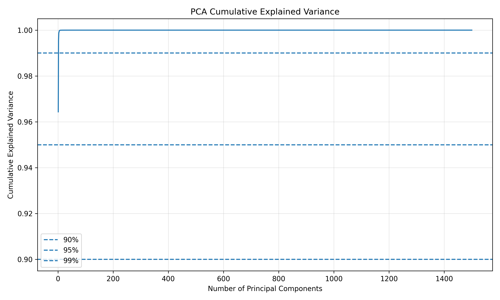
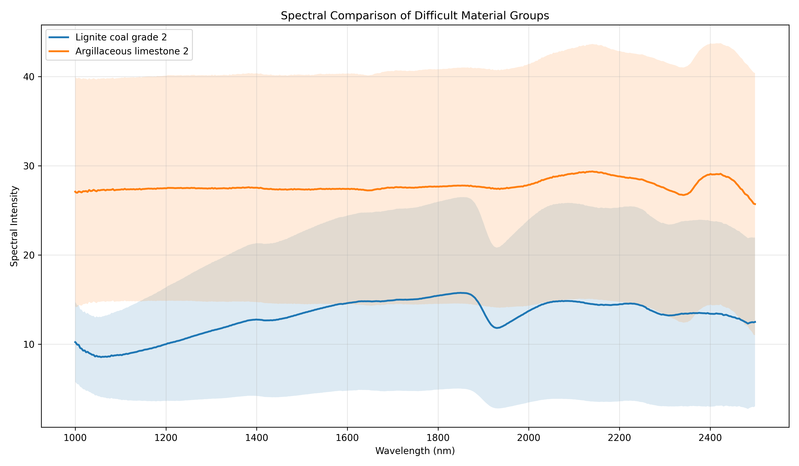

NIR SPECTROSCOPY / MODEL STUDY
Reading the difference between coal and rock.
A material-aware classification study built from 10,496 near-infrared spectra across coal and coal-measure rocks.

THE QUESTION
Can a spectrum carry enough evidence to identify coal?
Each sample is a one-dimensional fingerprint: intensity measured across the near-infrared range. The task is binary, but the geology is not.
The model must separate coal from shale, sandstone, limestone, siltstone, and clay while handling spectra from materials it has not seen before.
SELECTED PIPELINE
From raw signal to a decision.
The selected model was chosen for stability across material-grouped validation, not from a random spectrum split.
THE GUARDRAIL
Testing the material, not memorising the sample.
Related spectra from one material stay together. The development set contains 19 materials; the holdout contains 5 completely different materials.
MODEL CHECK
Stability over spectacle.
Repeated, material-grouped validation
3 seeds × 5 folds
The most stable overall pipeline.
The SVM balances accuracy, recall, and consistency across unseen material groups.
| Model | Mean accuracy | Mean F1 | Coal recall |
|---|---|---|---|
| SVM selected | 93.60% | 93.40% | 92.82% |
| XGBoost | 93.25% | 93.14% | 93.33% |
| Random Forest | 92.84% | 92.36% | 91.90% |
| PLS-DA | 82.11% | 85.37% | 99.04% |
HOLDOUT SNAPSHOT
When coal is missed, the cost is visible.
The original holdout comparison shows the selected SVM making 91 false-negative coal decisions and only 7 false-positive decisions.
Open saved metrics ↗PROJECT EVIDENCE
What the spectra actually show.
Generated by the project
no synthetic plots



THE TAKEAWAY
A careful split made the result more useful.
Material-aware validation makes the challenge visible: the model is promising, but broader external spectra are still needed before claiming industrial readiness.